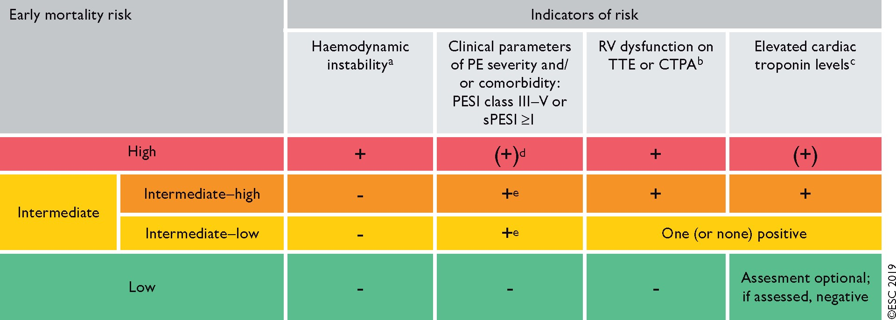

Pulmonary Embolism
Evaluation
Risk Stratification
Per the ESC 2019 Guidelines, patients are separated into High, Intermediate-High, Intermediate-Low, or Low risk for early mortality.

High-Risk, or Massive PE
- These patients present with hemodynamic instability, evidence of RV dysfunction, and possibly elevated cardiac enzymes.
- Hemodynamic instability is defined as:
- Hypotension (SBP < 90 mmHg for 15 minutes, fall in SBP >40 mmHg from baseline for 15 minutes), vasopressor requirement, or cardiac arrest
- Exclusion of sepsis, hypovolemic, new arrhythmia
Intermediate Risk, or Submassive PE
- These patients have evidence of RV dysfunction, may have elevated cardiac enzymes, or an elevated PESI risk (class III-IV or sPESI >= 1)
Low-Risk
- No hemodynamic compromise, normal cardiac enzymes (if tested), and no evidence of RV dysfunction
- low PESI risk class (I or II), sPESI = 0
RV Assessment
Either with echocardiography or CT angiography.
Resuscitation of PE
- Volume management
- Early vasopressors (NE) +/- inotropes (dobutamine)
- Consider thrombolysis
- Avoid intubation
- Consider ECMO for refractory cases
Treatment Strategy
Massive PE
- Strongly consider thrombolysis with tPA (make sure to review absolute and relative contraindications to thrombolysis).
- If there are absolute contraindications to lytics, then consider IR clot removal or surgical embolectomy.
Submassive/Intermediate Risk PE
Intermediate-High
- If there are no absolute contraindications to lysis, then consider smaller dose of tPA (0.5 mg/kg up to maximum 50 mg) over 2 hours
- If there are relative contraindications consider 25 mg tPA as a slow infusion
- If there are absolute contraindications then anticoagulation alone is preferred.
Intermediate-Low
Anticoagulation alone.
Low-Risk PE
Anticoagulation alone.
Subsegmental PE
- Contentious area. A 2021 study found that the risk of 90-day recurrent VTE in non-anticoagulated patients with isolated single SSPE was ~2%, and those with multiple is about ~5.7%. Interesting, the 90-day risk of recurrent VTE in patients treated with anticoagulation is approx 3% based on prior studies. Therefore, there might not be a clinically significant risk reduction with full anticoagulation for patients with a single SSPE.
- The 2021 CHEST guidelines recommend surveillence over anticoagulation for those with low risk of recurrent VTE, and anticoagulation over surveillance for those at high risk of recurrent VTE. This only applies if proximal DVT is ruled out (with ultrasonography)
What is the takeaway?
As of 2022, if the patient has a single SSPE and no particular risk factors for recurrence or decompensation (active cancer, cardiopulmonary poor dysfunction, completely unprovoked), and bilateral compression US is negative for DVT, then it is reasonable to consider no anticoagulation and close monitoring instead (with perhaps repeat ultrasounds in 2-3 weeks).
Thrombolysis
- Hold anticoagulation (IV heparin) before and during the infusion. Fully anticoagulate patients with IV UFH afterwards (resume without bolus when aPTT <2x ULN). Then, transition to oral agent once stable for 24-48 hours.
- a consistent finding among studies is that thrombolytic therapy leads to early hemodynamic improvement and, although a mortality benefit may exist, it occurs at a cost of increased major bleeding. Per the ESC 2019 guidelines: Thrombolytic therapy leads to faster improvements in pulmonary obstruction, PAP, and PVR in patients with PE, compared with UFH alone; these improvements are accompanied by a reduction in RV dilation on echocardiography.
- 10% risk of severe bleeding, 1.7% risk of intracranial hemorrhage (SRMA)
Massive PE
- FDA approved regimen: IV tPA (alteplase) 100 mg over 2 hours.
- Consider in more urgent situations (none are shown to be superior)
- infusion over 15 minutes
- 20 mg IV bolus then 80 mg IV over 2 hours
Intermediate Risk PE
While not routinely considered, thrombolysis can be considered for patients on anticoagulation who are decompensating or have higher risk of early mortality, anticoagulation treatment.
Some studies (particularly PEITHO) have examined thrombolysis in submassive PE and generally find no balanced benefit from thrombolysis (perhaps improved hemodynamic or pulmonary hypertension status, against increased bleeding risk). The MOPETT study used a particular regimen of tPA 0.5 mg/kg (up to a max of 50 mg) given as a 10 mg bolus followed by the remainder over 2 hours (i.e. reduced dose) for a particular definition of submassive PE ("moderate", with few patients having RV dysfunction); it showed that the risk of pulmonary hypertension was reduced compared to anticoagulation alone.
PEITHO (NEJM 2014)
Among patients with submassive PE being treated with unfractionated heparin, administration of tenecteplase (30-50 mg IV once over 5-10 seconds) reduces a composite endpoint of all-cause mortality or hemodynamic decompensation at 7 days when compared to placebo, though this was driven by reduced hemodynamic decompensation. Tenecteplase was associated with increased rates of major extracranial bleeding at 7 days (6.3% vs. 1.2%; P<0.001; NNH 20) and strokes at 7 days (2.4% vs. 0.2%; P=0.004; NNH 45).
Cardiac Arrest
- Give a 50 mg IV tPA bolus over 2 minutes, consider also starting a vasopressor early if in PEA arrest (obtain aterial access, use POCUS ECHO!). Follow with another 50 mg IV bolus after 15 minutes in the absence of ROSC.
- once a thrombolytic drug is administered, cardiopulmonary resuscitation should be continued for at least 60–90 min before terminating resuscitation attempts (ESC 2019)
Anticoagulation
- Massive/high risk PE --> IV UFH with bolus dose
- Intermediate or low-risk PE --> LMWH or fondaparinux or OAC (DOAC or VKA with bridging)
Special Populations
- Malignancy: Cancer Associated Thrombosis
- Pregnancy:
- Renal failure: IV UFH, VKA
- Prohibitive bleeding risk which is a contraindication to anticoagulation (active bleeding, surgery, etc).
- Further exclude DVT
- Consider IVC filter
References
- 2019 ESC Guidelines for the diagnosis and management of acute pulmonary embolism developed in collaboration with the European Respiratory Society (ERS) | European Heart Journal | Oxford Academic
- Submassive & Massive PE - EMCrit Project
- UptoDate
- Eight pearls for the crashing patient with massive PE